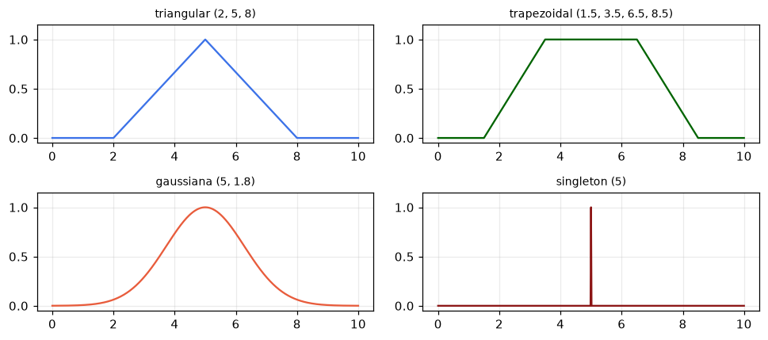
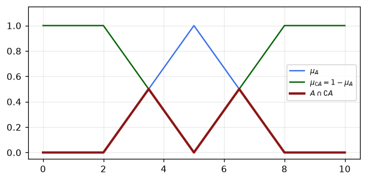
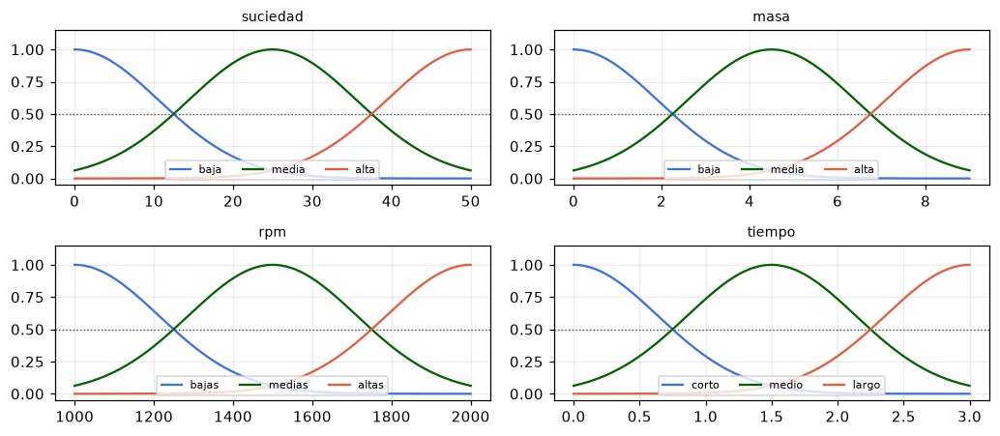
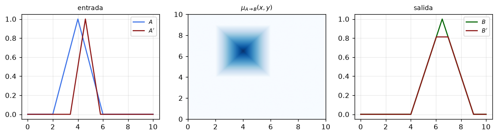
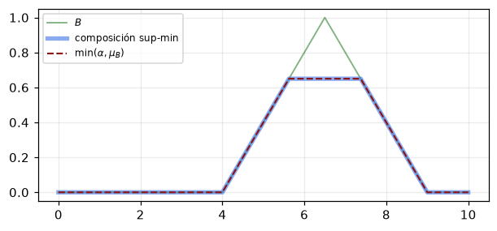
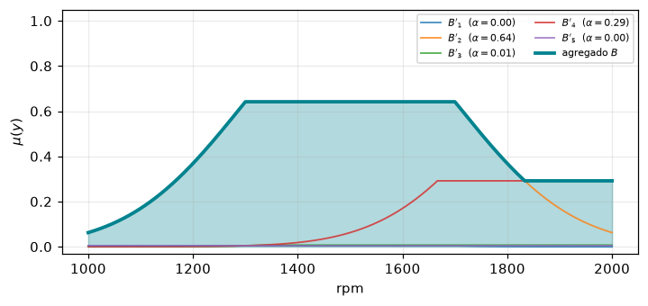
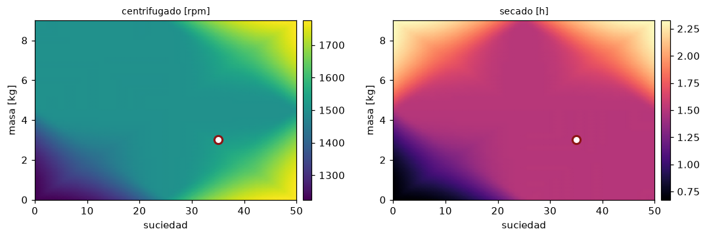
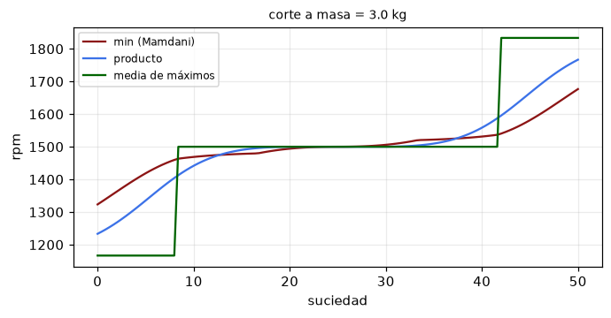

import numpy as np
import matplotlib.pyplot as plt
plt.rcParams.update({"figure.figsize": (6, 3.2), "axes.grid": True,
"grid.alpha": 0.25, "figure.dpi": 110})
np.set_printoptions(precision=3, suppress=True)
ROJO, AZUL, VERDE = "#8c1515", "#3C72E8", "#006400"
NARANJA, GRIS, CIAN = "#E85C3C", "#4d4d4d", "#00838f"Lógica difusa e inferencia Mamdani

Un sistema difuso es una disyunción de conjunciones. Dentro de cada regla las premisas se combinan con una t-norma; entre reglas, las conclusiones se combinan con una t-conorma. Todo lo demás son detalles de representación.
Contenido:
- Conjuntos difusos y funciones de pertenencia.
- Operadores: t-normas, t-conormas y complementos, con sus cotas verificadas.
- Variables lingüísticas y granulación de un universo.
- La regla como relación difusa, el modus ponens generalizado y el colapso del supremo.
- Mamdani paso a paso sobre el sistema de la lavadora.
- El sistema completo, la superficie de control y las decisiones de diseño.
Notación. \(\mu_A(x)\) es la función de pertenencia de \(A\), \(T\) una t-norma, \(S\) una t-conorma, \(\mathbf{I}\) una implicación, \(\alpha_i\) el nivel de activación de la regla \(i\). Todo se implementa con numpy; no hace falta ninguna librería de lógica difusa.
1. Conjuntos difusos
Un conjunto difuso es su función de pertenencia, \(\mu_A : X \rightarrow [0,1]\). No hay un conjunto por un lado y una función por otro, así que programar un conjunto difuso es programar una función.
def tri_mf(x, a, b, c):
# triangular: sube de a a b y baja de b a c
return np.maximum(0.0, np.minimum((x - a) / (b - a), (c - x) / (c - b)))
def trap_mf(x, a, b, c, d):
return np.clip(np.minimum((x - a) / (b - a), (d - x) / (d - c)), 0.0, 1.0)
def gauss_mf(x, a, b):
# exp(-(x-a)^2 / b^2). Ojo: b es una anchura, no una desviación estándar.
return np.exp(-((x - a) ** 2) / b ** 2)
def singleton_mf(x, a):
# el dato nítido a, representado como conjunto difuso sobre la malla x
y = np.zeros_like(x)
y[np.argmin(np.abs(x - a))] = 1.0
return yx = np.linspace(0, 10, 601)
fig, axes = plt.subplots(2, 2, figsize=(9, 4))
for ax, (y, tit, col) in zip(axes.ravel(), [
(tri_mf(x, 2, 5, 8), "triangular (2, 5, 8)", AZUL),
(trap_mf(x, 1.5, 3.5, 6.5, 8.5), "trapezoidal (1.5, 3.5, 6.5, 8.5)", VERDE),
(gauss_mf(x, 5, 1.8), "gaussiana (5, 1.8)", NARANJA),
(singleton_mf(x, 5), "singleton (5)", ROJO)]):
ax.plot(x, y, color=col)
ax.set_title(tit, fontsize=9)
ax.set_ylim(-0.05, 1.15)
fig.tight_layout()
plt.show()
Propiedades
El soporte es donde la pertenencia es positiva, el núcleo donde vale uno, la altura es el supremo, y el \(\alpha\)-corte es el conjunto nítido \(A_\alpha = \{x : \mu_A(x) \geq \alpha\}\).
El \(\alpha\)-corte es el puente entre lo difuso y lo nítido: fijado un nivel, lo que queda es un conjunto ordinario.
def propiedades(x, mu, alpha=0.6, tol=1e-9):
sop = x[mu > tol]
nuc = x[mu >= 1 - tol]
cor = x[mu >= alpha]
borde = lambda z: (round(float(z.min()), 2), round(float(z.max()), 2)) if z.size else None
return {
"soporte": borde(sop),
"nucleo": borde(nuc),
"altura": round(float(mu.max()), 3),
"normal": bool(mu.max() >= 1 - tol),
f"alfa-corte({alpha})": borde(cor),
}
mu_trap = trap_mf(x, 1.0, 3.5, 6.0, 9.0)
for k, v in propiedades(x, mu_trap).items():
print(f"{k:>18}: {v}") soporte: (1.02, 8.98)
nucleo: (3.5, 6.0)
altura: 1.0
normal: True
alfa-corte(0.6): (2.5, 7.2)# Un conjunto recortado a la altura 0.4 deja de ser normal: su núcleo es vacío.
# Es exactamente lo que produce la implicación de Mamdani, y por eso conviene verlo ahora.
recortado = np.minimum(mu_trap, 0.4)
for k, v in propiedades(x, recortado).items():
print(f"{k:>18}: {v}") soporte: (1.02, 8.98)
nucleo: None
altura: 0.4
normal: False
alfa-corte(0.6): None2. Operadores
Las operaciones no se definen, se axiomatizan. Una t-norma es simétrica, asociativa, monótona y tiene al \(1\) como neutro; una t-conorma es igual pero con neutro en \(0\).
De los axiomas se siguen dos cotas que conviene tener presentes al elegir operadores:
\[T(x,y) \leq \min(x,y), \qquad S(x,y) \geq \max(x,y)\]
T_min = lambda a, b: np.fmin(a, b)
T_prod = lambda a, b: np.multiply(a, b)
T_luka = lambda a, b: np.maximum(a + b - 1.0, 0.0)
S_max = lambda a, b: np.fmax(a, b)
S_prob = lambda a, b: a + b - np.multiply(a, b)
S_luka = lambda a, b: np.minimum(a + b, 1.0)
comp_estandar = lambda a: 1.0 - a
I_mamdani = T_min # implicación de Mamdani: min
I_larsen = T_prod # implicación de Larsen: producto# Verificación numérica de las cotas y de la dualidad de De Morgan.
rng = np.random.default_rng(0)
u, v = rng.random(200_000), rng.random(200_000)
print("t-normas <= min :", all(np.all(T(u, v) <= T_min(u, v) + 1e-12)
for T in (T_prod, T_luka, T_min)))
print("t-conormas >= max :", all(np.all(S(u, v) >= S_max(u, v) - 1e-12)
for S in (S_prob, S_luka, S_max)))
for T, S, nombre in [(T_min, S_max, "min / max"),
(T_prod, S_prob, "producto / suma prob."),
(T_luka, S_luka, "Lukasiewicz")]:
dual = comp_estandar(T(comp_estandar(u), comp_estandar(v)))
print(f"De Morgan {nombre:>22}: {np.allclose(dual, S(u, v))}")t-normas <= min : True
t-conormas >= max : True
De Morgan min / max: True
De Morgan producto / suma prob.: True
De Morgan Lukasiewicz: True# La ley del tercero excluido no se cumple, y no es un defecto sino el punto:
# un elemento puede estar a medias dentro y a medias fuera.
A = tri_mf(x, 2, 5, 8)
noA = comp_estandar(A)
fig, ax = plt.subplots(figsize=(6.5, 3))
ax.plot(x, A, color=AZUL, label=r"$\mu_A$")
ax.plot(x, noA, color=VERDE, label=r"$\mu_{\complement A} = 1 - \mu_A$")
ax.plot(x, T_min(A, noA), color=ROJO, lw=2.5, label=r"$A \cap \complement A$")
ax.set_ylim(-0.05, 1.15)
ax.legend(fontsize=8)
plt.show()
print("altura de A ∩ ¬A :", T_min(A, noA).max(), " (sería 0 en lógica clásica)")
altura de A ∩ ¬A : 0.5 (sería 0 en lógica clásica)3. Variables lingüísticas
Una variable lingüística toma como valores palabras, y cada palabra es un conjunto difuso sobre el universo numérico. Granular un universo es partirlo en términos.
Criterio de diseño habitual: centros equiespaciados y anchura \(b = \Delta / (2\sqrt{\ln 2})\), que hace que dos términos vecinos se crucen exactamente en \(0{,}5\). Así ninguna zona del universo queda sin un término que la describa.
def granula(x_min, x_max, nombres):
# centros equiespaciados; anchura tal que los vecinos se cruzan en 0,5
centros = np.linspace(x_min, x_max, len(nombres))
delta = centros[1] - centros[0]
b = delta / (2 * np.sqrt(np.log(2)))
return {n: (float(c), float(b)) for n, c in zip(nombres, centros)}
UNIV = {"suciedad": (0.0, 50.0), "masa": (0.0, 9.0),
"rpm": (1000.0, 2000.0), "tiempo": (0.0, 3.0)}
TERM = {
"suciedad": granula(*UNIV["suciedad"], ["baja", "media", "alta"]),
"masa": granula(*UNIV["masa"], ["baja", "media", "alta"]),
"rpm": granula(*UNIV["rpm"], ["bajas", "medias", "altas"]),
"tiempo": granula(*UNIV["tiempo"], ["corto", "medio", "largo"]),
}
N_PTS = 601
GRID = {v: np.linspace(*UNIV[v], N_PTS) for v in UNIV}
def mu(var, term, x):
return gauss_mf(x, *TERM[var][term])
for v in TERM:
print(f"{v:>9}:", {t: tuple(round(q, 2) for q in p) for t, p in TERM[v].items()}) suciedad: {'baja': (0.0, 15.01), 'media': (25.0, 15.01), 'alta': (50.0, 15.01)}
masa: {'baja': (0.0, 2.7), 'media': (4.5, 2.7), 'alta': (9.0, 2.7)}
rpm: {'bajas': (1000.0, 300.28), 'medias': (1500.0, 300.28), 'altas': (2000.0, 300.28)}
tiempo: {'corto': (0.0, 0.9), 'medio': (1.5, 0.9), 'largo': (3.0, 0.9)}fig, axes = plt.subplots(2, 2, figsize=(9.5, 4.2))
for ax, var in zip(axes.ravel(), UNIV):
xs = GRID[var]
for col, term in zip((AZUL, VERDE, NARANJA), TERM[var]):
ax.plot(xs, mu(var, term, xs), color=col, label=term)
ax.axhline(0.5, color=GRIS, ls=":", lw=0.9)
ax.set_title(var, fontsize=9)
ax.set_ylim(-0.05, 1.15)
ax.legend(fontsize=7, ncol=3, loc="lower center")
fig.tight_layout()
plt.show()
4. La regla como relación, y el modus ponens generalizado
Una regla si \(x\) es \(A\) entonces \(y\) es \(B\) no es una implicación escalar sino una relación difusa sobre \(X \times Y\):
\[\mu_{A\rightarrow B}(x,y) = \mathbf{I}\big(\mu_A(x), \mu_B(y)\big)\]
Dado un hecho \(A'\), la conclusión sale de componer el hecho con la relación:
\[\mu_{B'}(y) = \sup_{x \in X} T\big\{\mu_{A'}(x),\, \mu_{A\rightarrow B}(x,y)\big\}\]
def relacion(muA, muB, I=I_mamdani):
# matriz |X| x |Y| con el grado con que la regla admite cada par (x, y)
return I(muA[:, None], muB[None, :])
def composicion(muAp, R, T=T_min):
# regla de inferencia composicional: sup_x T{mu_A'(x), R(x, y)}
return np.max(T(muAp[:, None], R), axis=0)
xs = np.linspace(0, 10, 401)
ys = np.linspace(0, 10, 401)
muA = tri_mf(xs, 2.0, 4.0, 6.0)
muB = tri_mf(ys, 4.0, 6.5, 9.0)
R = relacion(muA, muB)
muAp = tri_mf(xs, 3.4, 4.6, 5.8) # hecho difuso, parecido al antecedente
muBp = composicion(muAp, R)
fig, axes = plt.subplots(1, 3, figsize=(10, 2.8))
axes[0].plot(xs, muA, color=AZUL, label="$A$")
axes[0].plot(xs, muAp, color=ROJO, label="$A'$")
axes[0].set_title("entrada", fontsize=9); axes[0].legend(fontsize=8)
axes[1].imshow(R.T, origin="lower", extent=[0, 10, 0, 10], aspect="auto", cmap="Blues")
axes[1].set_title(r"$\mu_{A \to B}(x, y)$", fontsize=9); axes[1].grid(False)
axes[2].plot(ys, muB, color=VERDE, label="$B$")
axes[2].plot(ys, muBp, color=ROJO, label="$B'$")
axes[2].set_title("salida", fontsize=9); axes[2].legend(fontsize=8)
fig.tight_layout()
plt.show()
print("altura de B' :", round(float(muBp.max()), 4))
print("compatibilidad máxima entre A' y A :", round(float(np.max(T_min(muAp, muA))), 4))
altura de B' : 0.8125
compatibilidad máxima entre A' y A : 0.8125El colapso del supremo
Si el hecho es un número y no un conjunto difuso, se representa por un singleton y el supremo desaparece. Usando \(T(a,1)=a\) y \(T(a,0)=0\):
\[\mu_{B'}(y) = \mu_{A\rightarrow B}(x', y) = \mathbf{I}\big(\underbrace{\mu_A(x')}_{\alpha},\, \mu_B(y)\big) \;\xrightarrow{\;\text{Mamdani}\;}\; \min\big(\alpha,\, \mu_B(y)\big)\]
Es decir, el consecuente recortado a la altura \(\alpha\). Conviene comprobarlo en vez de creerlo: es la identidad que convierte la teoría en veinte líneas de numpy.
x_dato = 4.7
por_composicion = composicion(singleton_mf(xs, x_dato), R)
alpha = float(np.interp(x_dato, xs, muA))
por_recorte = np.minimum(alpha, muB)
print("alpha = mu_A(4.7) :", round(alpha, 4))
print("¿coinciden ambas rutas? :", np.allclose(por_composicion, por_recorte, atol=1e-9))
fig, ax = plt.subplots(figsize=(6.5, 2.8))
ax.plot(ys, muB, color=VERDE, lw=1.2, alpha=0.5, label="$B$")
ax.plot(ys, por_composicion, color=AZUL, lw=3.5, alpha=0.6, label="composición sup-min")
ax.plot(ys, por_recorte, color=ROJO, lw=1.4, ls="--", label=r"$\min(\alpha, \mu_B)$")
ax.legend(fontsize=8)
plt.show()alpha = mu_A(4.7) : 0.65
¿coinciden ambas rutas? : True
5. Mamdani paso a paso
El sistema es una lavadora. Dos entradas, suciedad y masa de ropa; dos salidas, velocidad de centrifugado y tiempo de secado.
| suciedad | masa | rpm | tiempo | |
|---|---|---|---|---|
| \(\mathcal{R}_1\) | baja | baja | bajas | corto |
| \(\mathcal{R}_2\) | media | media | medias | medio |
| \(\mathcal{R}_3\) | alta | alta | altas | largo |
| \(\mathcal{R}_4\) | alta | baja | altas | medio |
| \(\mathcal{R}_5\) | baja | alta | medias | largo |
Las tres primeras son la diagonal, el sentido común. Las dos últimas cubren las esquinas donde las entradas empujan en direcciones opuestas, y son las que justifican el sistema.
REGLAS = [
{"si": [("suciedad", "baja"), ("masa", "baja")],
"entonces": [("rpm", "bajas"), ("tiempo", "corto")]},
{"si": [("suciedad", "media"), ("masa", "media")],
"entonces": [("rpm", "medias"), ("tiempo", "medio")]},
{"si": [("suciedad", "alta"), ("masa", "alta")],
"entonces": [("rpm", "altas"), ("tiempo", "largo")]},
{"si": [("suciedad", "alta"), ("masa", "baja")],
"entonces": [("rpm", "altas"), ("tiempo", "medio")]},
{"si": [("suciedad", "baja"), ("masa", "alta")],
"entonces": [("rpm", "medias"), ("tiempo", "largo")]},
]
HECHO = {"suciedad": 35.0, "masa": 3.0}Paso (i), fusificación. Evaluar el dato en las funciones de pertenencia de las premisas.
for var in ("suciedad", "masa"):
grados = {t: round(float(mu(var, t, HECHO[var])), 3) for t in TERM[var]}
print(f"{var:>9} = {HECHO[var]:>5} ->", grados) suciedad = 35.0 -> {'baja': 0.004, 'media': 0.642, 'alta': 0.369}
masa = 3.0 -> {'baja': 0.292, 'media': 0.735, 'alta': 0.007}Paso (ii), activación. Combinar las premisas de cada regla con la t-norma. Con el mínimo, el nivel de activación lo fija siempre la premisa más débil.
def activacion(hecho, T=T_min):
alphas = []
for r in REGLAS:
grados = [mu(v, t, hecho[v]) for v, t in r["si"]]
a = grados[0]
for g in grados[1:]:
a = T(a, g)
alphas.append(float(a))
return np.array(alphas)
alphas = activacion(HECHO)
for i, (r, a) in enumerate(zip(REGLAS, alphas), start=1):
prem = " y ".join(f"{v} {t}" for v, t in r["si"])
print(f"R{i}: si {prem:<30} -> alpha = {a:.3f}")R1: si suciedad baja y masa baja -> alpha = 0.004
R2: si suciedad media y masa media -> alpha = 0.642
R3: si suciedad alta y masa alta -> alpha = 0.007
R4: si suciedad alta y masa baja -> alpha = 0.292
R5: si suciedad baja y masa alta -> alpha = 0.004Pasos (iii) y (iv), implicación y agregación. Cada regla recorta su consecuente a la altura \(\alpha_i\), y las conclusiones se unen con la t-conorma.
def infiere_conjunto(hecho, salida, T=T_min, I=I_mamdani, S=S_max):
# devuelve la malla de la salida, el conjunto agregado y el recorte de cada regla
y = GRID[salida]
alphas = activacion(hecho, T=T)
recortes, agregado = [], np.zeros_like(y)
for a, r in zip(alphas, REGLAS):
cons = dict(r["entonces"])
if salida not in cons:
recortes.append(np.zeros_like(y))
continue
rec = I(a, mu(salida, cons[salida], y))
recortes.append(rec)
agregado = S(agregado, rec)
return y, agregado, recortes, alphas
y_rpm, agregado, recortes, alphas = infiere_conjunto(HECHO, "rpm")
fig, ax = plt.subplots(figsize=(7.5, 3.2))
for i, rec in enumerate(recortes, start=1):
ax.plot(y_rpm, rec, lw=1.2, alpha=0.8, label=f"$B'_{i}$ ($\\alpha={alphas[i-1]:.2f}$)")
ax.fill_between(y_rpm, 0, agregado, color=CIAN, alpha=0.30)
ax.plot(y_rpm, agregado, color=CIAN, lw=2.5, label="agregado $B$")
ax.set_xlabel("rpm"); ax.set_ylabel(r"$\mu(y)$"); ax.set_ylim(-0.03, 1.05)
ax.legend(fontsize=7, ncol=2)
plt.show()
Paso (v), desfusificación. El conjunto agregado hay que reducirlo a un número. Ningún método se deduce de los axiomas; se eligen por su comportamiento.
# np.trapezoid es el nombre nuevo (numpy >= 2); np.trapz sigue en Colab.
integra = getattr(np, "trapezoid", None) or np.trapz
def centroide(y, m):
den = integra(m, y)
return float(integra(m * y, y) / den) if den > 1e-12 else float(np.mean(y))
def bisector(y, m):
acum = np.cumsum(m)
if acum[-1] <= 1e-12:
return float(np.mean(y))
return float(y[np.searchsorted(acum / acum[-1], 0.5)])
def maximos(y, m):
nucleo = y[m >= m.max() - 1e-9]
return {"menor máximo": float(nucleo[0]),
"media de máximos": float(nucleo.mean()),
"mayor máximo": float(nucleo[-1])}
metodos = {"centroide": centroide(y_rpm, agregado),
"bisector": bisector(y_rpm, agregado),
**maximos(y_rpm, agregado)}
for k, v in metodos.items():
print(f"{k:>18}: {v:8.1f} rpm") centroide: 1521.9 rpm
bisector: 1518.3 rpm
menor máximo: 1300.0 rpm
media de máximos: 1500.0 rpm
mayor máximo: 1700.0 rpm6. El sistema completo
Con todo lo anterior, el sistema entero cabe en una función. La estructura es siempre la misma y los operadores son argumentos, de modo que se pueden cambiar y medir el efecto.
def mamdani(hecho, T=T_min, I=I_mamdani, S=S_max, desfuzz=centroide):
salidas = {}
for var in {v for r in REGLAS for v, _ in r["entonces"]}:
y, agregado, _, _ = infiere_conjunto(hecho, var, T=T, I=I, S=S)
salidas[var] = desfuzz(y, agregado)
return salidas
print("hecho :", HECHO)
print("salida:", {k: round(v, 1) for k, v in mamdani(HECHO).items()})hecho : {'suciedad': 35.0, 'masa': 3.0}
salida: {'rpm': 1521.9, 'tiempo': 1.5}# Superficie de control: el sistema evaluado en toda la rejilla de entradas.
ns = 46
ss = np.linspace(*UNIV["suciedad"], ns)
mm = np.linspace(*UNIV["masa"], ns)
Z = {"rpm": np.zeros((ns, ns)), "tiempo": np.zeros((ns, ns))}
for a, s_val in enumerate(ss):
for b, m_val in enumerate(mm):
out = mamdani({"suciedad": s_val, "masa": m_val})
for k in Z:
Z[k][b, a] = out[k]
fig, axes = plt.subplots(1, 2, figsize=(10, 3.4))
for ax, (k, tit, cmap) in zip(axes, [("rpm", "centrifugado [rpm]", "viridis"),
("tiempo", "secado [h]", "magma")]):
c = ax.pcolormesh(ss, mm, Z[k], cmap=cmap, shading="gouraud")
ax.plot(HECHO["suciedad"], HECHO["masa"], "o", color="w", ms=8, mec=ROJO, mew=2)
ax.set_xlabel("suciedad"); ax.set_ylabel("masa [kg]")
ax.set_title(tit, fontsize=9); ax.grid(False)
fig.colorbar(c, ax=ax, pad=0.02)
fig.tight_layout()
plt.show()
Cinco reglas escritas en castellano, ninguna con un número dentro, generan una superficie continua y no lineal. Las mesetas alrededor del centro de cada regla son la firma de un sistema basado en reglas: ahí una sola regla domina la agregación y el centroide apenas se mueve. La variación se concentra en las transiciones entre reglas.
Las decisiones de diseño, medidas
Los operadores no son un detalle de implementación. Cambiarlos cambia la superficie, y la única forma honesta de elegir es medir el efecto.
variantes = {
"Mamdani (min/min/max, centroide)": {},
"producto en activación e implicación": {"T": T_prod, "I": I_larsen},
"agregación suma probabilística": {"S": S_prob},
"desfusificación por media de máx": {"desfuzz": lambda y, m: maximos(y, m)["media de máximos"]},
}
for nombre, kw in variantes.items():
out = mamdani(HECHO, **kw)
print(f"{nombre:>36}: rpm = {out['rpm']:7.1f} tiempo = {out['tiempo']:.2f} h") Mamdani (min/min/max, centroide): rpm = 1521.9 tiempo = 1.50 h
producto en activación e implicación: rpm = 1509.7 tiempo = 1.50 h
agregación suma probabilística: rpm = 1547.5 tiempo = 1.50 h
desfusificación por media de máx: rpm = 1500.0 tiempo = 1.50 h# Un corte de la superficie: cómo responde el sistema a la suciedad con la ropa fija.
masa_fija = 3.0
suc = np.linspace(*UNIV["suciedad"], 120)
fig, ax = plt.subplots(figsize=(7, 3.2))
for nombre, kw, col in [("min (Mamdani)", {}, ROJO),
("producto", {"T": T_prod, "I": I_larsen}, AZUL),
("media de máximos", {"desfuzz": lambda y, m: maximos(y, m)["media de máximos"]}, VERDE)]:
curva = [mamdani({"suciedad": s, "masa": masa_fija}, **kw)["rpm"] for s in suc]
ax.plot(suc, curva, color=col, label=nombre)
ax.set_xlabel("suciedad"); ax.set_ylabel("rpm"); ax.legend(fontsize=8)
ax.set_title(f"corte a masa = {masa_fija} kg", fontsize=9)
plt.show()
Los escalones de la curva verde son el defecto de los métodos de máximos: un cambio infinitesimal en la entrada hace que el máximo salte de una regla a otra, y la salida salta con él. El centroide, en rojo y azul, responde de forma continua. Esa es la razón por la que en control se usa el centroide pese a costar una integral.
7. Ejercicios
Completitud. Añada las cuatro reglas que faltan para cubrir las nueve combinaciones y vuelva a dibujar la superficie. ¿Desaparecen las mesetas o solo se desplazan?
Granulación. Cambie a cinco términos por variable con
granulay compare la superficie con la de tres términos. Cuente cuántas reglas haría falta escribir para una base exhaustiva.Anchura. Multiplique por dos y por un medio la anchura \(b\) de todos los términos. Con términos muy estrechos aparecen zonas donde ninguna regla se activa. ¿Qué devuelve
centroideahí, y por qué es una condición de falla que hay que tratar explícitamente?Implicación material. Sustituya la implicación de Mamdani por Kleene-Dienes, \(\mathbf{I}(a,b)=\max(1-a, b)\), y observe qué le pasa a la salida. Explique el resultado en términos de lo que aporta una regla que no se activa.
Hecho no nítido. Suponga que el sensor de suciedad es impreciso y entrega un conjunto difuso triangular en lugar de un número. Use
composicionen vez del recorte y compare.